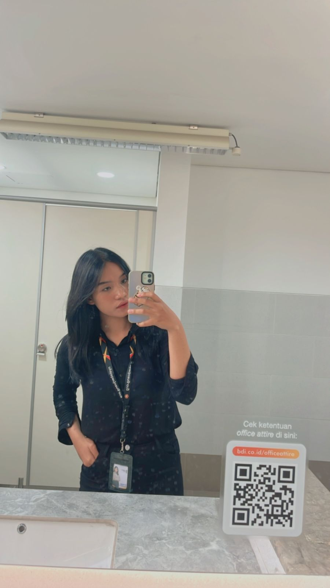

Hai Lusy
Semangat ya nugasnya, Lusy, kamu pasti bisa! Setiap langkah kecil yang kamu ambil sekarang adalah kemajuan yang besar
Kesedihan, kelelahan, dan pusing dalam bekerja adalah bumbu-bumbu hidup yang mewarnai perjalanan menuju
kesuksesan, ditandai dengan pengorbanan dan ketekunan yang istimewa.
"Kamu itu lebih berani dari yang kamu yakini, lebih kuat dari yang terlihat dan lebih pintar dari yang kamu
pikirkan." -Christopher Robin (A. A. Milne)
Jika aku adalah file JSON, kamu pasti akan menjadi key untuk kebahagiaanku
Anjayyyy hahahaha
By Nart